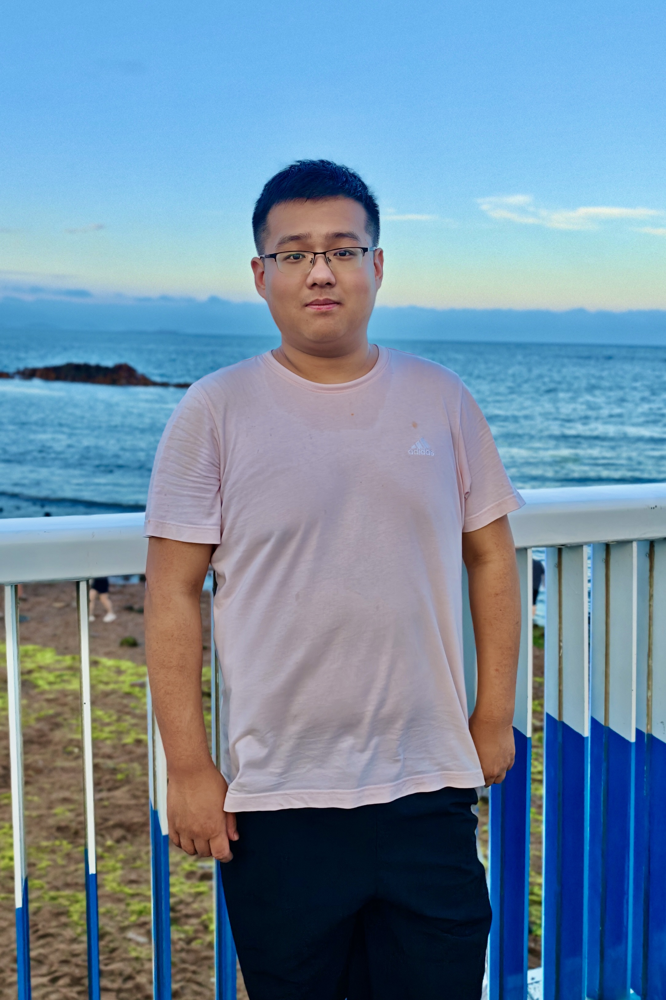

|
Haoran Wang
I am now a senior undergraduate student at
ACM Honors Class,
Shanghai Jiao Tong University majoring in Computer Science.
Now I am a visiting student at
WAVLab affiliated with LTI/CMU, advised by Prof.
Shinji Watanabe. During my junior year, I am very fortunate to work with Prof.
Kai Yu at
X-LANCE Lab.
My research interests lie in generative audio and speech processing, especially in neural audio codecs and speech
language models. My long-term goal is to pioneer a universal audio foundation model capable of holistically
understanding and generating the full spectrum of sound, including speech, music, and complex acoustic scenes, while
making these models high-fidelity, controllable, and efficient.
Feel free to check out my CV and shoot me an email if you'd like to chat.
Email /
CV /
Google Scholar /
Github /
|

|
Education
|
Carnegie Mellon University
Visiting Scholar • Jul. 2025 - Present
Advisor: Prof.
Shinji Watanabe
|
 |
Shanghai Jiao Tong University
B.Eng. in Computer Science • Sept. 2022 - June 2026 (Expected)
Academic Advisor: Prof.
Yong Yu
Research Advisor: Prof.
Kai Yu
|
Selected Publications
My research interests lie in speech and audio processing, especially neural codecs and speech language models for complex acoustic environments. I am interested in building general and high-fidelity speech representations that are useful for both reconstruction and downstream tasks.
Representative works are highlighted.
BSCodec: A Band-Split Neural Codec for High-Quality Universal Audio Reconstruction
Haoran Wang, Jiatong Shi, Jinchuan Tian, Bohan Li, Kai Yu, Shinji Watanabe
Under review.
arXiv /
Code /
Demo
|
Towards General Discrete Speech Codec for Complex Acoustic Environments: A Study of Reconstruction and Downstream Task Consistency
Haoran Wang, Guanyu Chen, Bohan Li, Hankun Wang, Yiwei Guo, Zhihan Li, Xie Chen, Kai Yu
IEEE Automatic Speech Recognition and Understanding Workshop (ASRU), 2025.
arXiv
|
PURE Codec: Progressive Unfolding of Residual Entropy for Speech Codec Learning
Jiatong Shi, Haoran Wang, William Chen, Chenda Li, Wangyou Zhang, Jinchuan Tian, Shinji Watanabe
IEEE Automatic Speech Recognition and Understanding Workshop (ASRU), 2025.
|
Why Do Speech Language Models Fail to Generate Semantically Coherent Outputs? A Modality Evolving Perspective
Hankun Wang, Haoran Wang, Yiwei Guo, Zhihan Li, Chenpeng Du, Xie Chen, Kai Yu
Under review.
arXiv
|
This homepage is designed based on Haoran Geng and Jon Barron's website. Last updated: Feb 23, 2024
© 2025 Haoran Wang
|